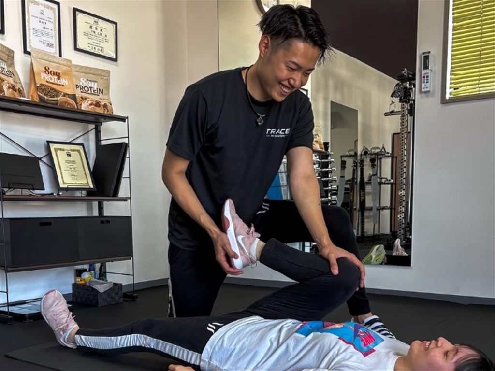

1．目的に合った指導を受けられるか
パーソナルジムへ通う目的は、ダイエット、筋力アップ、姿勢改善、運動不足の解消など人によって異なります。まずは、自分の目的に合った指導を受けられるかを確認しましょう。
ホームページを見るだけでなく、体験時に「どのような進め方になるか」「自分の悩みに対応できるか」を具体的に聞くことが大切です。目標がまだはっきりしていない場合は、現在の悩みや生活習慣から一緒に整理してくれるジムを選ぶと始めやすくなります。
2．自分に合う内容とペースか

同じ目標でも、運動経験や体力、身体の状態によって必要な内容は変わります。決まったメニューを全員が同じように行うのではなく、フォームや負荷を自分に合わせて調整してもらえるかを確認します。
運動初心者の方は、難しい種目を急いで増やすよりも、基本の動きから教えてもらえる環境が安心です。週に何回通うかも、目標だけでなく仕事や家庭の予定を踏まえて考えましょう。通う頻度については「パーソナルジムは週何回通えば痩せる？」でも詳しく解説しています。
3．料金の総額が分かりやすいか
料金を比べるときは、1回分の金額だけでなく、入会金、月額料金、契約期間、追加費用を含めた総額を確認します。回数が同じでも、1回あたりの時間やサポート内容が違えば、単純には比較できません。
- 入会金や事務手数料
- 1回あたりの時間と月の回数
- 最低契約期間や更新条件
- ウェア・シューズ・飲み物などの費用
- 予約変更やキャンセルのルール
予算内であっても、生活に無理が出るプランは続けにくくなります。目標までに必要な期間の目安と、毎月支払える金額の両方を相談して決めることが大切です。
TRACEの掲載料金は、入会金10,000円（税込）、60分コースが月4回40,000円（税込）・月8回72,000円（税込）、初回体験3,300円（税込）です。40分・90分コース、都度払い・回数券も用意しています。最新の詳細は料金プランをご確認ください。
4．無理なく通い続けられるか
トレーニング内容が良くても、場所や営業時間が生活に合わなければ継続は難しくなります。自宅や職場からの距離だけでなく、よく通る道から寄りやすいか、希望する時間に予約できるかも確認しましょう。
車で通う場合は駐車場の有無も重要です。完全予約制のジムでは、予約方法や変更時の連絡手段も事前に確認しておくと安心です。
5．体験時の説明や相性に納得できるか

パーソナルトレーニングは、トレーナーと一緒に進める時間が多いサービスです。体験では、話しやすさ、説明の分かりやすさ、質問への答え方なども確認します。
その場で決めきれない場合は、料金や通い方を整理してから判断しても問題ありません。疑問が残ったまま契約するのではなく、内容に納得できるジムを選びましょう。初めて体験へ行く方は「体験当日の流れ・服装・持ち物」も参考にしてください。
佐賀市のTRACEについて
パーソナルジム TRACEは、佐賀市神野西にある完全個室・マンツーマンのジムです。佐賀駅から車で約2分で、無料駐車場も用意しています。
一人ひとりの体力や目的に合わせて内容を調整し、無理なく続けられる身体づくりをサポートします。営業時間は月・水〜土曜日が10:00〜22:00、日曜日が10:00〜18:00で、火曜日は定休日です。
ウェア・シューズ・タオルのレンタルはありません。体験時には動きやすい服装、室内用シューズ、タオルをご持参ください。ウォーターサーバーは利用できます。